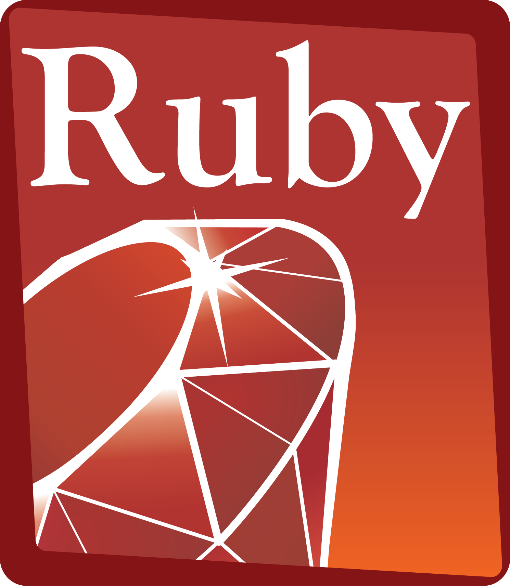

Repasamos algunos de los lenguajes de programación más utilizados por los hackers y piratas informáticos entre los que destacan Phyton, Ruby, C, C++, Java, JavaScript, HTML, SQL y PHP.
Los más polulares

HTML

HTML es un lenguaje muy sencillo que se utiliza para desarrollar las páginas a las que accedemos desde nuestro navegador de Internet. Estructura y da formato a los contenidos de la web. Es una de las tecnologías principales usadas en el Internet y sirve como columna vertebral de todos los sitios web.JavaScript

JavaScript en cambio, es más complejo. Es un lenguaje de programación de tipo interpretado, que se utiliza fundamentalmente para el desarrollo de páginas webs dinámicas. Su popularidad se ha disparado con el aumento de los smartphones, en parte porque es muy útil para construir sitios responsive, crear cookies o validar formularios.PHP

Es un lenguaje para servidores dinámicos que se encarga de gestionar los sites y las bases de datos. Este último está considerado como uno de los lenguajes más relevantes en cuanto a hacking porque controlar un servidor es fundamental a la hora de intervenir en un site. Es de código abierto, con una enorme comunidad mundial que lo trabaja y es compatible a través de múltiples plataformas.SQL

Se encarga de almacenar y gestionar los datos sensibles y confidenciales, como credenciales de usuario, contraseñas y otro tipo de información personal. La mayoría de piratas informáticos acceden a las bases de datos SQL para luego vender la información en foros de la deep web.
Aprovechas los exploits
Trasladado a la vida real, sería como si un modelo de cerradura (sistema o aplicación) tuviera un fallo de diseño que nos permitiera crear llaves que la abrieran (exploit) y poder así acceder al sitio que trata de proteger y realizar actos delictivos (malware).
Python

Es la principal herramienta que utilizan los investigadores de seguridad y los ciberdelincuentes para crear este tipo de programas. Se dice que un pirata informático debe saber Python, ya que es el lenguaje base para la creación de exploits. Python ofrece una flexibilidad más amplia y se puede crear exploits solamente usando PythonRuby

Es un lenguaje orientado a objetos bastante complejo, pero muy útil cuando se trata de forzar alguna vulnerabilidad. La herramienta hacker más famosa, Metasploit se programa en Ruby. A pesar de Rubí puede no ser tan versátil como Python, el conocimiento de Ruby es imprescindible en este tipo de acciones.
Sin más preámbulo!!!!
Aprender a Programar Gratis

Las formas de aprender a programar han variado a lo largo de los años de un simple pasatiempo a una carrera.Hoy en día es posible aprender a programar completamente gratis por internet. Atrás quedaron los días en los que aprender a programar se reservaba para unos pocos o costaba una cantidad considerable de dinero.
Incluso si no tienes intención de involucrarte en el campo del desarrollo, aprender un lenguaje de programación puede ser muy beneficioso:
- Te ayudará a administrar mejor los sitios web;
- Reducirá la dependencia en un desarrollador externo para tus propios proyectos;
- Te dará la libertad para crear aplicaciones, sitios web y otros proyectos con facilidad.
Aquí están los mejores sitios para aprender a programar gratis:

- Aprendeaprogramar.com
- SRATCH
- edX
- Coursera
- CODEACADEMY
- BitDegree
- Codewars
- Dash General Assembly
Navegadores que utilizan los HACKERS
 Y es que, aunque muchos consumidores piensen que un “hacker” es un pirata informático, la realidad es todo lo contrario, ya que la mayoria se dedica a investigar y localizar fallos de confianza para que después, las empresas afectadas e incluso ellos mismos puedan proponer una respuesta al respecto. Varias de las herramientas que usan para ver los ataques que ocurren, son los siguientes motores de búsqueda:
Y es que, aunque muchos consumidores piensen que un “hacker” es un pirata informático, la realidad es todo lo contrario, ya que la mayoria se dedica a investigar y localizar fallos de confianza para que después, las empresas afectadas e incluso ellos mismos puedan proponer una respuesta al respecto. Varias de las herramientas que usan para ver los ataques que ocurren, son los siguientes motores de búsqueda:
- Startpage
- Censys
- Shodan
- Greynose
- Zoomeye
- Wigle
- Publicwww
- Hunter.io
- HotScripts
- Shodan